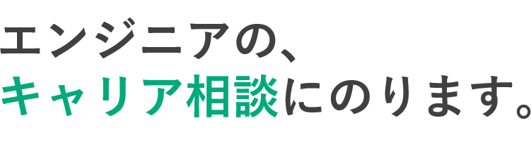
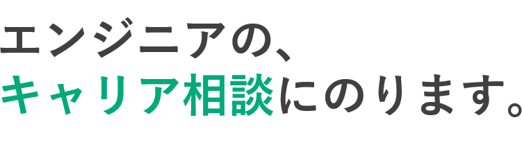

現役エンジニアに相談できる
IT・Web業界に特化した豊富な知識とノウハウをもつ、専任のアドバイザーがキャリア相談にのり、具体的且つ最適なアドバイスをいたします。


システム開発事業10年以上のエンジニア専門の転職エージェント
弊社は受託システム開発事業をはじめ、プログラマ育成事業を行う、テクノロジーに強い企業です。業界と精通し、知識やノウハウが豊富だからこそ、最適なご紹介を実現します。


転職サポートが充実
転職面談に加え、現役人事の面接アドバイスや、履歴書添削もお任せください。履歴書には載っていない、あなたの魅力を引き出し、よりあなたにあった企業のご紹介に役立てます。


女性スタッフによる丁寧なサポート
面接練習や面接同行など、女性の担当が行います。
女性ならではのキメの細かいサポートが受けられます。


本当に無料なんですか？
GeekCareerは募集企業様から紹介料をいただいています。そのため、ご利用頂く転職者様から料金は一切頂いておりません。サービス

サービスを利用し始めたら、絶対転職しないといけませんか？
転職は納得したうえでされるのが一番だと考えていますので、無理強いはいたしません。そのため面談の末、キャリアアドバイザーから「現時点では転職を勧めません」と、アドバイスさせていただく場合もございますので、じっくりご検討して決めることができます。

平日は仕事で忙しく面談の時間がとれないのですが。
土日や平日の夜など、お客さまのご都合がつく時に面談を調節させていただいております。ご希望の日程をご相談ください。

他社のエージェントとどこが違うでしょうか？
GeekCareeのキャリア相談は現役のエンジニアで、業界経験も豊富なため、より適切なキャリアプランと、お客様に寄り添った親身なアドバイスができます。

紹介された企業でも、お断りすることはできるのでしょうか？
あらかじめヒアリングしたうえ、マッチした企業のご紹介を行いますが、面接してみてお断りしたい場合は、辞退いただいてまったく問題ございません。